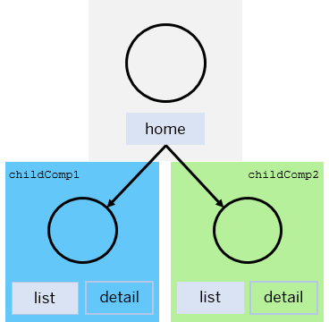

Navigate with Nested Components
The navTo method in the sap.ui.core.routing.Router class enables you to define a set of parameters to navigate to a specific route.
To use the navTo method for navigation with nested components, you need to call the method with the following information:
-
Name of the route
-
Parameters for the route
-
Target information for the route name and the parameters in the nested components (optional)
-
Information, whether the current browser hash is replaced or a or a new hash entry is set (optional)
For more information, sap.ui.core.routing.Router.navTo in the API Reference.
The call triggers the following actions in the given order:
-
For the new hash, the variable placeholders in the route's pattern are replaced with the given parameters. If the method is called with information for a router in nested components, the targets with type Component are loaded to compose the hash parts of these Component targets.
-
The new hash is set to the browser.
-
The browser fires a hashchange event.
-
The router processes the event and propagates the event along the hierarchy which was built while loading the nested components.
-
Each router checks its own hash part and informs the matched route. The matched route displays the targets which are configured for this route.
-
Each targets loads its View or Component and adds it to the configured controlAggregation of the controlId container.
-
The router fires a routeMatched event and the route fires a matched event to inform the application that the hash change is completed.
Using navTo for Passing Information to a Nested Router
For passing information about the route name and parameters for a nested router, you use the oComponentTargetInfo parameter of the navTo method. By this, the router in nested components can show the targets which are configured to one specific route instead of giving the router an empty hash as default. This oComponentTargetInfo parameter contains key-value pairs with the name of a Component target as the key, and the value must be an object which has at least the route name in the route property. The route name should be matched within the router of this component with the parameters for this route. If this route has again Component targets, the property componentTargetInfo can be used to specify the route information. The value of the componentTargetInfo property has the same structure as the oComponentTargetInfo parameter of the navTo method.
The following example shows a top level router with a "home" route with two Component targets:
-
Component target childComp1 with the following two defined routes:
-
Route list: Has an empty string hash as pattern and shows a list of items
-
Route detail: Shows the details for an item
-
-
Component target childComp2 with the following two defined routes:
-
Route list: Has an empty string hash as pattern and shows a list of items
-
Route detail: Shows the details for an item which displays again a nested Component target grandChildComp1
-
The grandChildComp1 target has the following two routes defined:
-
Route list: Has an empty string hash as pattern and shows a list of items
-
Route detail: Shows the details for an item
When the home route in the top level router is matched, the Component targets childComp1 and childComp2 are loaded and shown. Each of them receives an empty string hash as default, and so the list routes of their routers are matched.
By using the navTo method, specific route information can be given to multiple nested components and, if available, their deep nested components. For example, the detail routes in both Component targets childComp1 and childComp2 need to be matched. Since the detail route of target childComp2 loads another nested component (grandChildComp1), it is also possible to match the detail route in the deep nested component grandChildComp1 with the same navTo call, see the following code snippet.
oRouter.navTo("home", {
// this route doesn't need any parameter
}, {
childComp1: {
route: "detail",
parameters: {
...
}
},
childComp2: {
route: "detail",
parameters: {
...
},
componentTargetInfo: {
grandChildComp1: {
route: "detail",
parameters: {
...
}
}
}
}
});After the navTo call, the route state of each router looks as depicted in the following figure:
Navigating Away From a Nested Component
When a new route is matched within a router and a Component target was displayed within the old route, it is necessary to avoid that this Component target still reacts to unnecessary events such as hashChanged. For example, after switching from the detail route to the list route within the Component target childComp2, the deep nested Component target grandChildComp1 is no longer relevant for the UI. This is shown in the following figure:

To avoid this,
-
the hash part is removed from the browser hash.
-
the router is stopped, so that it no longer reacts to the hashChanged event.